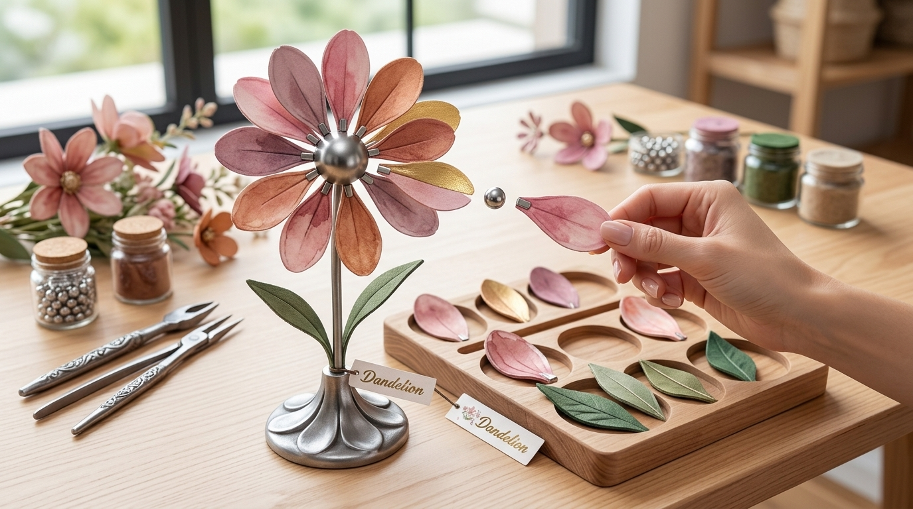

Quiénes Somos & Nuestro Proyecto
En Dandelion redefinimos el concepto de los regalos tradicionales. Nos cualificamos como un emprendimiento innovador enfocado en el diseño, desarrollo y comercialización de flores de metal e imanes totalmente armables e intercambiables[cite: 18].
El problema que resolvemos: Los detalles tradicionales para parejas (como flores naturales, chocolates o peluches) son efímeros o genéricos: se marchitan, se consumen o terminan en un cajón[cite: 18]. En Dandelion resolvemos la falta de un regalo duradero y con significado, ofreciendo una experiencia compartida: una flor de metal que no se marchita y que la pareja arma con sus propias manos[cite: 18].
¿Por qué somos diferentes?:
• Frente a flores naturales: No se marchitan, duran para siempre y se pueden rearmar las veces que desees[cite: 18].
• Frente a flores soldadas fijas: Nuestras flores utilizan un sistema de imanes de neodimio en bases y pétalos, permitiendo cambiar su forma y colores dinámicamente[cite: 18].
• Valor central: El regalo no es solo un objeto decorativo de acero, sino la experiencia interactiva de armarlo y personalizarlo en pareja[cite: 18].
Público Objetivo: Diseñado para jóvenes y parejas de 18 a 35 años en Chile que buscan regalos originales, personalizados y con un valor emocional genuino por sobre lo convencional[cite: 18].